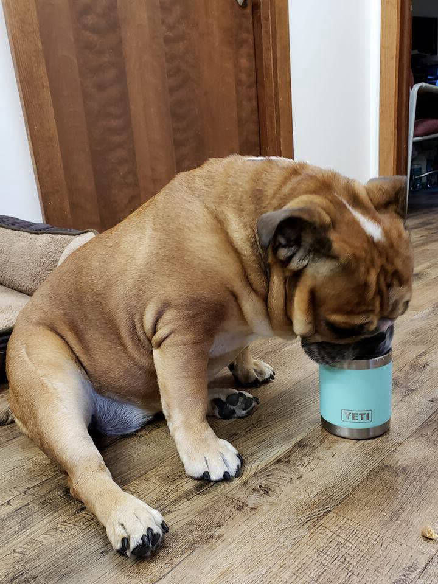

Barrett Insurance is committed to integrity, customer service and education. We are here to protect your dreams. All of our agents are licensed with the State of Michigan, have a college degree and specialize in different areas of insurance. We are an independent agency which allows us to work with numerous companies and underwriters. Our advantage allows us to shop your insurance and provide the best coverage for you, your family and your business. We are here for you.
Clint Barrett is the son of Kaye and John Barrett from Camden, Michigan. Clint and his sister Lisa were raised on a crop farm and attended Camden Frontier Schools. During high school, Clint served as a leader with the Future Farmers of America (FFA) and participated in showing his animals at the Hillsdale County Fair. Clint later earned a Bachelor’s of Business degree from Michigan State University and a Master of Management degree from Aquinas College.
In 1990, Clint began working for Citizens Insurance as a claims adjuster, then as a branch manager and finally a team leader. During his time with the company, he continued his education and earned his CIC (Certified Insurance Counselor) designation. In 2001, Clint purchased the Sander-Smith Insurance Agency in Jonesville, Michigan and renamed the business to Barret Insurance Agency, LLC. In 2004, the business relocated from the Trillium plaza to its current location at 125 W. Chicago Street in Jonesville, MI.
Clint married Cyndi in 1991 and became the stepfather to Christina Bulock. They lived together in Perry, Michigan until they moved to Hillsdale County in 2001.
In addition to his business pursuits, Clint served on many of our local community boards. He was part of the Downtown Development Association (DDA) of Jonesville, the Hillsdale County Community Foundation and the Hillsdale Community Health Center. Clint was also a member of the Hillsdale Exchange club and Jonesville Rotarian.
On August 1, 2015 at the age of 49, Clint Barrett passed away.
Barrett Insurance Agency will remain committed to the principles that Clint Barrett installed when he put his name on the door. He understood the importance of insurance and protecting your assets.
Barrett Insurance – Protecting Your Dreams